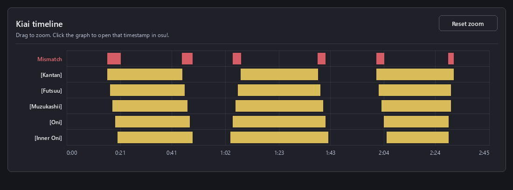
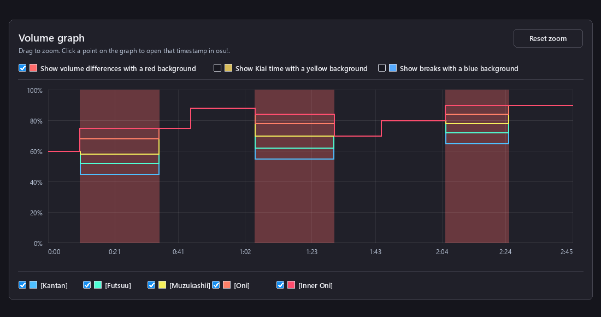
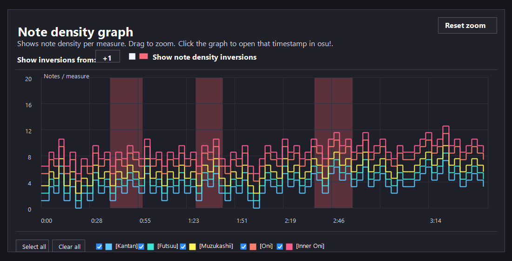
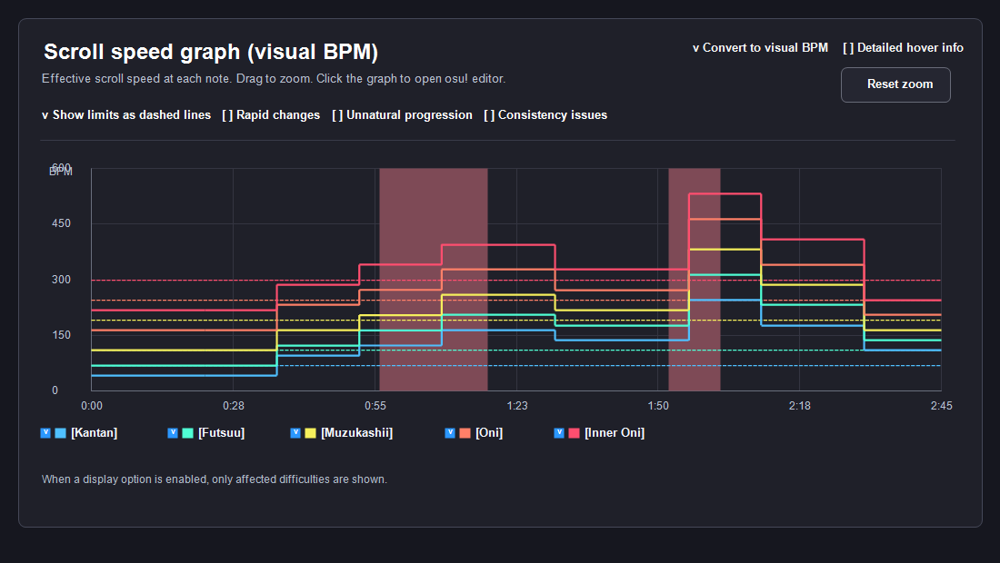
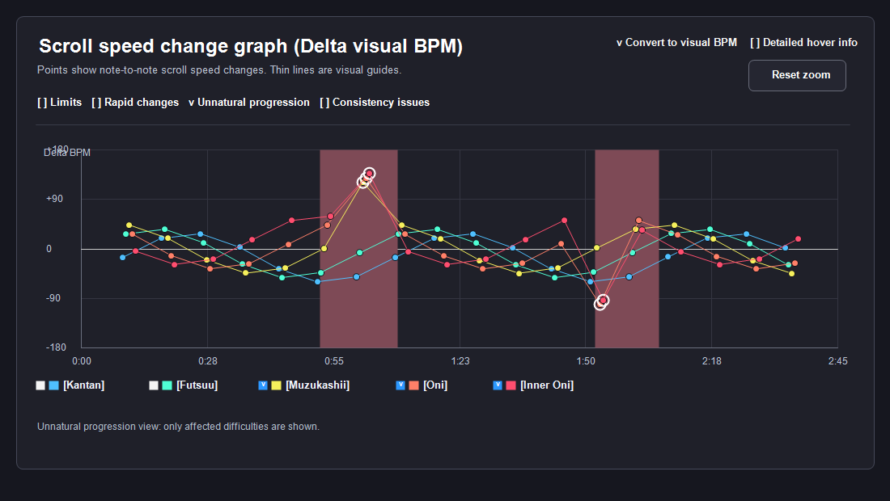

■ Overview
This tool is an osu!taiko modding support tool for mappers creating ranked beatmaps and Beatmap Nominators performing modding.
It also includes several features intended for NAT members performing BN evaluations.
■ Background
When creating ranked beatmaps, mappers generally use checking tools such as
AiMod,
Mapset Verifier,
and
Mapset Verifier MVTaikoChecks.
However, these tools do not cover every possible issue.
For example, the document Taiko Checklist V1.2 by iRedi contains many checks that cannot currently be detected automatically by existing tools.
This tool mainly focuses on automatically detecting issues that Mapset Verifier cannot check.
It is designed to be used together with Mapset Verifier, so checks already covered by Mapset Verifier are generally not duplicated here.
This tool also includes several AiMod-like features.
(⚠ It does NOT replace AiMod entirely — final AiMod checking is still required.)
You can think of it as an "AiMod for checking all diffs at once."
In hybrid mapsets, only taiko difficulties are displayed.
■ Notes
Even when used together with Mapset Verifier, this tool cannot detect every possible Ranking Criteria violation.
Snap calculations in this tool are based on beatLength and do not consider meter.
Therefore, 1/1 snap refers to "every beat" rather than specifically measure boundaries.
If you keep the page open in your browser, updates may not automatically apply.
Reload the page periodically, or use Ctrl + F5 to force-refresh if updates are not reflected.
Notes / Privacy
■ Privacy
The checks performed by this tool are based on predefined rule-based logic.
No generative AI or automatic AI-based judgement is used.
Examples:
Tag spell checking: performed by comparison with an internal dictionary
Touhou Source checking: performed by matching against a predefined title list
Snap detection: performed using BPM lines and timing calculations
Unknown words, unusual naming styles, or newly emerging genres may not always be handled correctly.
■ Uploaded Files
Uploaded .osu / .osz files are processed entirely within your browser.
File contents are never sent or exposed to any third party, including the developer.
No server upload or file storage is performed.
All checking logic runs locally on the client side using JavaScript.
The source code of this tool is also publicly available on GitHub:
modding-helper
■ Analytics
This tool uses Google Analytics to understand usage statistics and improve the tool.
Anonymous information such as page views and browser environment may be collected.
However, uploaded .osu / .osz files are never uploaded or transmitted.
Collected analytics data is handled according to Google Analytics policies.
■ Disclaimer
This tool is intended to assist osu!taiko modding and checking workflows.
Displayed Warning / Error results are supplementary information only, and do not guarantee rankability or correctness.
The developer is not responsible for any problems, disadvantages, or damages caused by the use of this tool.
Please use the tool and interpret its results at your own discretion and responsibility.
While this tool aims to provide accurate checking whenever possible, false positives, missed detections, or incompatibilities caused by future specification changes may still occur.
Bug reports, suggestions for improving detection logic or terminology, and feature requests are always welcome.
Clap / Whistle
■ Background
Kat has two hitsound types: Clap and Whistle.
Some Beatmap Nominators dislike the sound of whistles, so using only Clap may sometimes be preferred.
■ Detection Content
This check analyzes hitsounds of Circle objects (type=1/5) and displays the number of Clap, Whistle, and Both hitsounds.
Enabling either the "Show Whistle timestamps" or "Show Clap timestamps" checkbox will also display the corresponding timestamps.
■ Notes
Using Whistle or Whistle + Clap is not unrankable.
1ms Offset
■ Background
When 60000 / BPM does not divide evenly, floating-point precision errors caused by copy-pasting in the osu! editor may result in 1 ms offsets.
1 ms offsets are generally best avoided because they may cause SV lines to be skipped or introduce inaccuracies in SR calculation.
Mapset Verifier and AiMod do not display ±1 ms offsets because they are not considered unrankable.
■ Detection Content
Notes, sliders, and spinners that are not on the target snap grid are detected.
Offsets of ±1 ms
are displayed as warnings, while
unsnapped objects
with offsets of ±2 ms or more are displayed as errors.
In addition to spinner tails, slider tail offset detection is also supported.
Slider tail timing is estimated using pixelLength, SliderMultiplier, SV, and BPM, then rounded to the nearest millisecond.
In some maps, the estimated slider tail timing may not perfectly match the actual timing shown in the osu! editor.
The following snap divisions are used as the target grid:
1/1, 1/2, 1/3, 1/4, 1/6, 1/8, 1/12, 1/16.
Objects that are not on this target grid are detected as unsnapped.
1/5, 1/7, and 1/9 snaps are only checked when the corresponding checkbox is enabled.
■ Detection Content (Differences between osu!stable and osu!lazer)
For snap estimation at the 1 ms level, the tool calculates both an osu!lazer-equivalent grid position and an osu!stable-equivalent grid position.
Difference between the osu!stable and osu!lazer grid calculations
If the red timing point is redTime and the snap divisor is beatSnap, the snap interval is
snapLength = beatLength / beatSnap.
The osu!lazer-equivalent position is calculated directly from the snap index as
gridTime = redTime + snapIndex * snapLength.
In contrast, the osu!stable editor generates its grid from the red timing point by repeatedly applying
gridTime += snapLength.
With direct multiplication, floating-point rounding mainly occurs in the final calculation. With repeated addition, a very small rounding error can accumulate on every step.
As a result, even with the same beatLength and snap index, truncating the result to an integer millisecond can produce a 1 ms difference between stable and lazer.
This tool checks both calculated positions. An object is treated as correctly snapped when it matches both grids.
If it matches only one, the tool displays a warning stating that it
snaps only to the osu!stable grid or
snaps only to the osu!lazer grid, together with its offset from the other grid.
If it matches neither grid, the normal warning / error level is determined from the offset to the nearer grid.
■ Notes
Since ±1 ms offsets are not unrankable, fixing every occurrence is not strictly required.
Kiai Comparison
■ Background
When the total kiai duration differs between difficulties, it is often difficult to identify which sections are different.
Mapset Verifier can compare total kiai duration, but cannot show the exact sections where differences occur.
■ Detection Content
This check displays sections where the kiai state does not match between difficulties.

Kiai comparison graph example. Mismatched sections are shown in red, and Kiai ON sections for each difficulty are shown in yellow.
It also warns when the end of a kiai section is not explicitly defined (same behavior as AiMod).
■ Notes
Using different kiai patterns between difficulties is not unrankable. This is especially common in Guest Difficulties.
However, when the same mapper created multiple difficulties, keeping kiai patterns consistent is often recommended unless there is a specific reason not to.
Kiai Snap
■ Background
AiMod can detect unsnapped kiai timing points, but it cannot detect cases where kiai timing is snapped to unusual divisions such as 1/4 or 1/8 instead of 1/1.
■ Detection Content
This check detects cases where kiai ON/OFF timing is placed on
anything other than 1/1 snap.
It also detects
unsnapped kiai lines
(such as 1/1 snap + 1 ms), matching AiMod behavior.
Double SV
■ Background
In many cases, duplicate SV lines are either unintentional or leftover from editing mistakes.
AiMod can detect duplicate SV lines placed at the exact same timestamp, but cannot detect duplicate SV lines offset by 1 ms.
■ Detection Content
This check detects SV lines that are placed too close together within the specified interval
(1 ~ 5 ms).
Barline
■ Background
In songs with multiple timing sections, unintended 1 ms offsets in red timing points can cause unintended double barlines or detached barlines between the barline and notes.
■ Detection Content 1: Double Barline
The check calculates generated barline positions from the red timing point BPM and meter, then checks whether another red timing point exists at the generated barline position +1 ms.
If that red timing point does not have omit first barline enabled, it is reported as a double barline issue.
Example: 02:45:635 -> 02:45:636 | A red timing point exists at the generated barline +1 ms without omit first barline enabled.
■ Detection Content 2: Unintended Detached Barline
This is checked when the double barline condition is met and a note exists on the +1 ms red timing point.
The check compares the effective visual scroll speed at the generated barline position with the effective visual scroll speed at the note position. If the values do not match, it is reported as an unintended detached barline error.
The visual scroll speed is calculated using the same idea as the Spread Comparison / Scroll Speed subtab, based on the current BPM, current SV, and SliderMultiplier.
■ Detection Content 3: Possibly Intentional Detached Barline
When the generated barline position is treated as T, this is checked when there is no red timing point at T + 1 ms, but a note and an SV line exist at that same position.
The check compares the visual scroll speed at the generated barline position with the visual scroll speed at the T + 1 ms note position. If the values do not match, it is reported as a possibly intentional detached barline warning.
The check also handles notes at T - 1 ms. In that case, it compares the visual scroll speed at the generated barline position T with the visual scroll speed at the T - 1 ms note position.
If the values do not match, it is also reported as a possibly intentional detached barline warning.
When a red timing point exists at T + 1 ms, the existing behavior is kept: if the speeds differ, it is reported as an unintended detached barline error.
However, if a note and a barline are both at T and the red timing point at T + 1 ms has omit first barline enabled, no first barline is drawn at T + 1 ms.
Because the note and barline remain together at T, this arrangement is not reported as a possibly intentional detached barline.
■ Detection Patterns
The generated barline position is treated as T, the position 1 ms later as T + 1 ms, and the position 1 ms earlier as T - 1 ms.
If an omit first barline red timing point exists at T, the tool treats the automatically generated barline at that position as intentionally hidden.
T state
T + 1 ms state
Note position
Double barline
Detached barline
Normal generated barline position
Red timing point without omit first barline
None
Detected
Not detected
Normal generated barline position
Red timing point without omit first barline
T + 1 ms
Detected
Detected if the speeds differ
Normal generated barline position
Red timing point with omit first barline
T + 1 ms
Not detected
Detected if the speeds differ
Normal generated barline position
Red timing point with omit first barline
T
Not detected
Not detected
Normal generated barline position
No red timing point / SV line exists
T + 1 ms
Not detected
Warning if the speeds differ
Normal generated barline position
Follows the existing checks
T - 1 ms
Follows the existing checks
Warning if the speeds differ
Red timing point with omit first barline
Red timing point without omit first barline
None
Not detected
Not detected
Red timing point with omit first barline
Red timing point without omit first barline
T
Not detected
Detected if the speeds differ
In the final case, the tool compares the scroll speed of the barline produced by the T + 1 ms red timing point with the scroll speed of the note placed at T.
For this reason, it is not treated as a double barline issue, and it is only reported as a detached barline issue when the visual scroll speeds do not match.
In contrast, when a normal barline and a note are both at T and the red timing point at T + 1 ms has omit first barline enabled, no comparison barline is drawn at T + 1 ms.
Because the barline and note at T are not detached, this case is not reported.
Also, even if the red timing point at T + 1 ms has omit first barline enabled, when a note is placed at the same T + 1 ms position, the tool compares the speed of the barline at T with the speed of the note at T + 1 ms.
When a note is placed at T - 1 ms, the tool compares the speed of the barline at T with the speed of the note at T - 1 ms.
■ Detection Content 4: Negative-start Barline Bug
When the first red timing point is placed at a negative timestamp, the tool compares the first generated barline position from that red timing point with the next red timing point position.
If the first generated barline position matches or passes the next red timing point, the result is shown as a Warning because osu!stable and osu!lazer may display the barline differently.
Next red timing point state
Warning content
omit first barline enabled
In osu!stable, this may be displayed as one barline, while in osu!lazer, the barline may disappear.
omit first barline disabled
In osu!stable, this may be displayed as a double barline, while in osu!lazer, it may be displayed as one barline.
■ Calculation Details
Generated barline positions are calculated from the red timing point time, beatLength, and meter.
Red timing point times and generated barline positions are floored so they are handled on osu!'s integer millisecond timeline.
If the meter cannot be read, it is treated as 4/4.
Each red timing section is checked from the current red timing point until the next red timing point. For the final red timing section, the check includes the next generated barline after the last HitObject.
■ Notes
Possibly intentional detached barlines are treated as warnings because they may be deliberate visual gimmicks.
Check the actual in-game appearance before deciding whether the placement is a problem.
Early Volume
■ Background
When a volume change is placed at the exact same timestamp as a HitObject, the new volume may not apply if the player hits the object 1 ms early.
For this reason, SV lines with volume changes are generally recommended to be placed at least 5 ms before the HitObject
(common offsets are around 5 ms, 1/16 snap, or 1/8 snap).
■ Detection Content
This check warns when an SV line with a volume change is
too close to a HitObject
(this detection cannot be performed by AiMod or Mapset Verifier).
The detection threshold can be selected from:
5 ms (exclusive) or
1/16 snap (exclusive).
Enabling
Show only differences of 15% or more
will display only cases where the volume difference is at least 15%.
Volume Comparison
■ Detection Content
This check compares red-line and green-line volumes between difficulties and detects sections with mismatched volume settings.
(This detection cannot be performed by AiMod or Mapset Verifier.)
Enabling
Show only differences of 5% or more
will display only sections where the volume difference is at least 5%.
Enabling
Show only sections lasting at least 50 ms
can hide extremely short sections shorter than 50 ms.
A step-line graph shows the volume changes for each difficulty.

Volume comparison graph example. Difficulties have different volumes in the red sections and matching volumes in sections without a background.
The background options above the graph can display volume differences in red,
kiai time in yellow, and breaks in blue.
Only one background option can be enabled at a time. Selecting another option automatically
clears the previous selection, and the selected background uses the full graph height.
Kiai and break backgrounds are displayed when at least one visible difficulty is in that state.
The checkboxes below the graph can show or hide individual difficulties.
Hidden difficulties are also excluded when calculating the volume-difference, kiai, and break backgrounds.
Line colors use virtual SR values based on the automatically sorted difficulty order.
Kantan is treated as SR 1, Futsuu as SR 2, Muzukashii as SR 3, Oni as SR 4,
and Inner Oni as SR 5. Each higher difficulty increases the virtual SR by 1.
These values do not represent actual calculated Star Ratings.
Drag across the graph to zoom into a time range, and use Reset zoom to return to the full view.
Clicking the graph opens that timestamp in osu!editor.
Unapplied SV
■ Background
SV lines (green timing points) apply from their own timestamp onward.
Therefore, if an SV line is placed immediately after a note or an automatically generated barline, that note or barline may not receive the intended SV.
For example, if a note is at T and an SV line is placed at T + 1 ms, the note itself is displayed using the scroll speed before that SV change.
Likewise, if an SV line is placed immediately after a generated barline position, that barline may be generated and displayed using the previous scroll speed.
■ Detection 1: SV may not be applied to notes
For each HitObject time T, this check looks for SV lines between T + 1 ms and T + 5 ms.
If such an SV line exists, the tool displays a yellow warning because the SV may not be applied to that note.
Example output: 00:01:000 -> 00:01:003 | +3 ms | Note SV x1 -> Following SV x1.25 (SV delta +0.25) | An SV line exists +3 ms after the note. The SV may not be applied to the note.
■ Detection 2: SV may not be applied to barlines
The tool calculates generated barline positions from red timing point BPM and meter values, then treats each generated barline position as T and checks for SV lines between T + 1 ms and T + 5 ms.
If such an SV line exists, the tool displays a yellow warning because the SV may not be applied to that barline.
Example output: 02:33:864 -> 02:33:865 | +1 ms | Barline SV x1 -> Following SV x0.5 (SV delta -0.5) | An SV line exists +1 ms after the generated barline. The SV may not be applied to the barline.
■ Notes
If the SV delta is 0 between the target position and the following SV line, no visual scroll speed change occurs, so the placement is not detected.
The check uses the same three-decimal precision as the displayed value. Very small differences that round to an SV delta of 0 are also excluded.
Red/Green Match
■ Background
Red lines (BPM lines) and green lines (SV lines) placed at the same timestamp are generally expected to share the same settings.
■ Detection Content
This check detects mismatches in:
volume,
kiai on/off state,
and
sampleset.
(This detection cannot be performed by AiMod or Mapset Verifier.)
■ Notes
Due to osu!editor limitations, the very first red timing point cannot have kiai enabled.
The osu! Ranking Criteria recommends placing a green timing point at the same timestamp
and enabling kiai only on the green line when kiai should start from the beginning of the map.
Because of this, this check intentionally ignores kiai mismatches between
the very first red line and the very first green line.
Additionally, the first red and green timing points may intentionally use different volume values.
This is because the red line volume is applied before that timestamp,
while the green line volume is applied from that timestamp onward.
SampleSet
■ Background
BPM lines (red lines), SV lines (green lines), and HitObjects can each be assigned a hitsound type called a sampleset.
The sampleset determines the sound style of hitsounds, and mainly consists of the following types:
1: Normal
2: Soft
3: Drum
In osu!taiko mode, 1: Normal is used in most cases, so the presence of other samplesets may indicate unintended hitsounds.
■ Detection Content
This check detects non-Normal samplesets and custom hitsounds.
(This detection cannot be performed by AiMod or Mapset Verifier.)
For red lines and green lines, the following are detected:
sampleset ≠ 1 (normal) → 2: Soft / 3: Drum
sampleIndex ≠ 0 → custom hitsounds
For notes, sliders, and spinners, the following are detected:
normalSet > 1 → 2: Soft / 3: Drum
additionSet > 1 → 2: Soft / 3: Drum
sampleIndex ≠ 0 → custom hitsounds
filename is specified → custom audio file
Hitsounds assigned to individual slider edges are also detected:
edgeSets.normalSet > 1 → 2: Soft / 3: Drum
edgeSets.additionSet > 1 → 2: Soft / 3: Drum
Slider Multiplier / TickRate
■ Background
In taiko mode, the slider multiplier (SliderMultiplier) is generally set to 1.40.
The slider tick rate (SliderTickRate) is usually set to 1,
while swing-rhythm songs typically use 3.
■ Detection Content
This check warns when SliderMultiplier is not set to 1.40.
The tool calculates the ratio of 1/3 snap notes based on the positions of all HitObjects.
If the ratio is at least 30%, the map is treated as a swing-rhythm map
(notes offset by 1 ms from 1/3 snap are also considered).
If the map is classified as swing rhythm, SliderTickRate = 3 is shown as the recommended value.
Otherwise, SliderTickRate = 1 is recommended.
A warning is displayed when the actual value differs from the recommended value.
(This detection cannot be performed by AiMod or Mapset Verifier.)
■ Notes SliderMultiplier = 1.40 is the most commonly used value in ranked osu!taiko beatmaps.
However, values other than 1.40 are not inherently invalid.
For example:
Using a lower SliderMultiplier than 1.40 in lower difficulties of high-BPM maps
(reference: Taiko Checklist V1.2 by iRedi)
Adjusting SliderMultiplier instead of modifying SV values
in low-BPM maps to preserve aesthetics or existing SV structures
Increasing SliderMultiplier in swing rhythm songs
to visually make 1/3 and 1/6 snap patterns closer to 1/2 and 1/4 snap spacing,
improving readability and visual aesthetics
The threshold of “30% or more 1/3 snap usage”
is a heuristic value defined by this tool for convenience.
As a result, some swing rhythm maps may fall below this value,
while some straight rhythm maps may exceed it.
Final judgement should always be made
by considering the song rhythm and the actual mapping context.
First Note Lag
■ Background
In osu!, a brief freeze or lag spike may occur when the audio file is first loaded.
If the first note is placed immediately after the audio begins, this freeze may occur while the note is already visible on screen or close to the judgement area, making it difficult to hit the note with proper rhythm.
For this reason, when the first note is placed very close to the beginning of the audio, it is generally recommended to insert approximately 500 ~ 1000 ms of silence at the start of the audio file.
■ Detection Content
This check estimates where the first note appears on screen at the moment the audio starts playing.
Only Circle objects are analyzed; Sliders and Spinners are ignored.
The tool estimates osu!taiko scroll speed from BPM and SV values, and calculates how long it takes for a note to travel from the edge of the screen to the judgement area under a 16:9 environment assumption.
Visible：Estimated time from entering the screen until reaching the judgement area
Remain：Estimated remaining percentage until reaching the judgement area at the moment the audio starts (Estimated on-screen position of the note when the audio begins)
■ Detection Thresholds
Warning：Remain ≤ 50%
Error：Remain ≤ 25%
■ Notes
This estimation is based on a 16:9 environment assumption.
Actual visibility may vary depending on aspect ratio, skin, HR usage, osu!stable / osu!lazer differences, and PC environment.
The timing and severity of startup freezes are also environment-dependent.
This check does not guarantee that problems will occur; it should instead be used as a guideline for determining whether early note placement may be risky.
Metadata: Artist
■ Background
Artist / ArtistUnicode should generally be consistent across all difficulties within a mapset.
In addition, markers such as feat., vs., and CV:
should follow the standard formatting defined in the
Ranking Criteria.
■ Detection Content
This check detects the following:
Whether Artist / ArtistUnicode are consistent across all diffs
Whether special symbols are converted into recommended Romanised representations
Whether markers such as feat., vs., CV:, and VO: are formatted correctly
Whether commas are followed by a space
Whether consecutive half-width spaces or full-width spaces are present
■ Notes
Whether (Extended Edit) or (Extended Ver.) should be used depends on whether the track is an official or unofficial extended version.
This tool mainly detects cases where a similar marker already exists but does not follow the standard formatting.
Metadata: Source
■ Background
Touhou-related Source fields are commonly written in a distinctive format using:
Japanese title + full-width space + full-width tilde + half-width space + English title + period.
Example: 東方風神録 ～ Mountain of Faith.
■ Common Check
This check first verifies whether the Source field is consistent across all difficulties
(same functionality as Mapset Verifier).
■ Detection 1: Touhou
The Source field is compared against a list of known Touhou titles.
Checklist
If the Source matches exactly, it is displayed as OK.
If the Source appears to reference a Touhou work but differs slightly from a known title,
the tool warns about possible spelling mistakes or incorrect full-width / half-width spacing.
In such cases, the recommended formatting and a reference link are displayed.
Generic labels such as 東方 or Touhou are also displayed as confirmation targets,
since they may lack a sufficiently specific work title.
■ Detection 2: Other Checks
If the Source is ブルーアーカイブ or Blue Archive,
the recommended formatting ブルーアーカイブ -Blue Archive- is displayed.
■ Notes
This check is intended as a helper for verifying Source formatting for specific works.
Sources that do not match the detection targets above are treated as outside the scope of this check.
In addition, unknown Touhou titles, non-game Touhou-related works, or unusual formatting styles may not always be detected correctly.
In such cases, do not rely solely on the displayed result — please also verify the official source material and beatmap submission details.
Metadata: Tags
■ Background
Tags must be separated by exactly one half-width space.
Cases containing
multiple half-width spaces
or
full-width spaces
cannot be detected by AiMod or Mapset Verifier.
■ Detection Content
First, this check verifies whether Tags are consistent across all difficulties
(same functionality as Mapset Verifier).
It then detects the following issues in each difficulty's Tags:
Two or more consecutive half-width spaces between tags
Full-width spaces between tags
Duplicate tags appearing two or more times
Tags that are already present in Title / Artist / Source fields
Tags that may contain spelling mistakes
Suggested related tags / abbreviations
The duplicate tag check warns when the same tag appears multiple times in Tags.
It also treats Title / TitleUnicode / Artist / ArtistUnicode / Source as tag-like text split by half-width spaces,
and displays confirmation targets when those words are also present in Tags.
The spell checker mainly targets genre names and mapping-related tags,
detecting possible one-character substitutions, omissions, or extra characters.
Examples:
hardcroe → hardcore,
vocaliod → vocaloid
The related tag / abbreviation suggestions display tags that are commonly used together with specific tags.
Examples:
jpop → j-pop, pop /
tiebreaker → tb
This detection cannot be performed by AiMod or Mapset Verifier.
■ Notes
Spell-check suggestions and related-tag recommendations are not necessarily errors that must be fixed or added.
In particular, genre names and abbreviations may vary depending on the map content and song information,
so final judgement should be made manually by the mapper, modder, or Beatmap Nominator.
In addition, the supported tag database is limited, and not all spelling mistakes or related tags can be detected.
Metadata: Content Permission Check
■ Background
Some artists, labels, and franchises may prohibit or restrict the usage or upload of their music on osu!.
This check detects content that may require caution before use or upload,
based on osu!official Content usage permissions,
creator guidelines,
and past DMCA notices.
For the full supported list, guideline links, and original DMCA notice texts,
please refer to
Content Permission Check List.
■ Detection
This check reads the following metadata fields from each difficulty:
Artist
ArtistUnicode
Title
TitleUnicode
Source
Tags
If these fields contain keywords associated with disallowed usage,
conditional permissions,
upload restrictions,
or past DMCA notices,
the tool displays a warning or error.
Some brands and labels also include representative song titles as detection examples.
■ Notes
This check is intended to help verify content before usage or upload.
A warning does not necessarily mean the content is completely prohibited.
In some cases, exceptions may exist,
such as Featured Artists or individual permissions from the rights holder.
If a warning appears, please review the linked guidelines and DMCA notices to verify the current rights status.
Additionally, entries containing multiple song titles are representative examples only and are not exhaustive lists.
Misc: Preview Point
■ Background
When changing the overall offset of a mapset,
HitObjects and TimingPoints may be adjusted correctly while forgetting to update PreviewTime.
Additionally,
different difficulties may accidentally use different PreviewTime values,
or some difficulties may have no PreviewTime configured at all.
There is also an osu-web-specific issue with variable bitrate mp3 files:
even when PreviewTime itself is set correctly,
the preview playback position on osu-web may start from an unintended position.
Variable bitrate ogg files do not normally cause this problem, but variable bitrate mp3 files can be problematic
because osu-web may calculate the playback position differently for that format.
■ Detection
If PreviewTime is unsnapped,
the tool displays a warning
(this check is not performed by AiMod or Mapset Verifier).
The following checks are also performed:
PreviewTime differs between difficulties → error
PreviewTime is not configured → warning
The mp3 inside the .osz uses variable bitrate (VBR) → warning
■ Detection: mp3 variable bitrate check
When an .osz file is loaded, the tool checks the actual mp3 file referenced by the beatmap.
If it appears to use variable bitrate (VBR), a warning is displayed.
The check looks for VBR headers such as Xing / VBRI,
and also checks whether the bitrate changes between multiple mp3 frames.
If only a standalone .osu file is loaded, the audio file itself is unavailable, so this check cannot be performed.
Variable bitrate ogg files are not warned by this check.
The concern is mainly variable bitrate mp3, because it may cause the preview point to be shifted on osu-web.
If this warning appears, consider using a constant bitrate (CBR) mp3 instead.
■ Notes
A PreviewTime that is not snapped does not necessarily mean the map is unrankable.
However, since this may indicate that PreviewTime was accidentally left unchanged after an offset adjustment,
you should verify whether the displayed position is intentional whenever a warning appears.
The mp3 variable bitrate warning does not necessarily mean that PreviewTime in the beatmap is wrong.
Even if the preview sounds correct in osu!stable or in the editor,
only osu-web preview playback may start from an unintended position.
When this warning appears, check the preview on osu-web or consider converting the audio to constant bitrate.
Misc: BG
■ Background
Background events inside the [Events] section can specify the background image file name and its display offset.
Example:
[Events]//Background and Video events0,0,"BG.jpg",0,40
Background events use the following syntax: 0,0,filename,xOffset,yOffset
If xOffset / yOffset is 0,0, the values may be omitted.
■ Detection 1: BG: offset differences
This check reads the background events of each difficulty in the mapset and verifies whether
xOffset / yOffset are consistent between difficulties that use the same background image file.
If the same background file is used but the offsets differ between difficulties,
a warning will be displayed.
This check cannot be performed by AiMod or Mapset Verifier.
■ Detection 2: Background image format
This check reads the file extension of each background image referenced by background events and identifies
.jpg / .jpeg / .png files.
If a .png background image is used, a warning will be displayed because
.jpg is recommended from a file-size reduction perspective.
When an .osz file is loaded, the tool also checks the actual image file signature.
If the extension says .jpg / .jpeg but the file is actually PNG,
or if the extension says .png but the file is actually JPEG,
an error will be displayed.
If multiple background events exist, each image file name and format will be listed.
■ Notes
Difficulties using different background files are excluded from comparison.
For example, if Kantan uses BG.jpg while Muzukashii uses BG2.jpg,
they are treated as separate background images, so differing offsets will not trigger a warning.
Additionally, differing offsets for the same background file may sometimes be intentional.
If a warning appears, check whether it is an unintended inconsistency or a deliberate visual difference.
Miscellaneous: Flashing / Epilepsy Warning
■ Background
In osu!, storyboard / video / kiai effects containing repetitive strobing or rapid flashing effects may require an epilepsy warning.
In particular, osu!taiko kiai effects include visual elements such as:
hit object flashes
star fountains
side-screen flashes
These effects become faster as BPM increases,
meaning that high-BPM maps or maps containing repeated short kiai flashes may create stronger visual stimulation.
This feature is intended as a helper for identifying potentially high-frequency flashing effects.
■ Detection Content 1: Kiai Flash Frequency
This check analyzes the frequency of Kiai
OFF → ON
transitions and detects rapidly repeating kiai flashes.
The following thresholds are used:
2 Hz or higher：Caution
3 Hz or higher：Warning
For example:
ON 100ms
OFF 233ms
ON 100ms
OFF 233ms
ON 100ms
Cases where Kiai repeatedly turns ON within a short period of time are treated as potential high-frequency flashing effects.
Kiai flash frequency is estimated from the interval between Kiai OFF → ON transitions.
Since flashing above 3 Hz is commonly considered a concern from a photosensitive epilepsy perspective,
this tool treats cases with 3 or more Kiai ON events per second as warnings.
■ Detection Content 2: High-BPM Kiai
This check analyzes BPM during Kiai sections to estimate the possibility of rapid kiai flashing caused by high BPM values.
Because osu!taiko kiai effects increase in flashing frequency according to BPM,
high-BPM Kiai sections may create stronger visual stimulation.
The following thresholds are used:
300 BPM (5 Hz) or higher：Caution
360 BPM (6 Hz) or higher：Warning
The following information is displayed:
BPM：BPM during the Kiai section
Hz：Estimated flash frequency (BPM / 60)
start - end：Affected section
Flashing above 3 Hz is generally considered a concern from a photosensitive epilepsy perspective.
However, because osu!taiko kiai effects are not fullscreen strobes,
this tool uses higher BPM thresholds before displaying warnings.
■ Notes
This feature is intended only as a helper for evaluating whether an epilepsy warning may be necessary.
Displayed results do not automatically mean that a warning is mandatory or that the map is unrankable.
The actual intensity of visual stimulation depends heavily on factors such as:
flash size
brightness / contrast
flash duration
storyboard / video content
player environment
and other factors.
Storyboard and video flashing effects are not analyzed by this tool.
Final judgement should always be made after reviewing the actual gameplay footage and storyboard content.
Spread Comparison: Diff Order
■ Background
This feature is intended to help verify whether multiple difficulties within a mapset are arranged in an appropriate difficulty order and progression.
Its main purpose is to provide an overview of whether values such as OD / HP and note count change naturally from lower to higher difficulties.
■ Detection Content
Difficulty order is automatically estimated from difficulty names.
Difficulties that cannot be classified automatically are displayed as Unknown.
Since Unknown difficulties always require manual confirmation, they are displayed in red within the Diff Order tab.
The difficulty order can be adjusted manually using the following methods:
Selecting categories such as Kantan / Futsuu / Muzukashii from the dropdown menu
Using the ↑ / ↓ buttons to fine-tune the order within the same category
The manually adjusted order is also reflected in the OD / HP, note count, and finisher comparison displays.
■ Notes
When a mapset contains Guest Difficulties or custom difficulty names,
automatic difficulty-order estimation may not be completely accurate.
In such cases, the category and difficulty order should be adjusted manually.
Spread checks are not intended to automatically determine whether a map is unrankable.
In particular, larger spread gaps are often considered acceptable when Guest Difficulties are involved.
In addition, note count, OD / HP, and Finisher placement represent only part of overall spread quality.
Actual difficulty differences are also heavily influenced by rhythm, density, BPM, SV, patterns, hand usage, and stream / burst length.
Final judgement should always be made after reviewing the actual map content.
Spread Comparison: OD / HP
■ Detection Content
This check displays the OverallDifficulty and HPDrainRate values for each difficulty.
It also displays Delta OD and Delta HP, representing the difference compared to the previous difficulty.
Values that violate osu!taiko Ranking Criteria rules are displayed as warnings
(same functionality as Mapset Verifier).
The following progression patterns are also displayed as warnings:
Delta OD ≤ 0：OD does not increase in a higher difficulty
Delta HP > 0：HP increases in a higher difficulty
Spread Comparison: Note Count
■ Detection Content
This check displays the note count for each difficulty.
Sliders and Spinners are not included in the note count.
The following values are displayed:
Notes：Total number of Circle objects
Δ prev：Difference in note count compared to the previous difficulty
Ratio：Multiplier relative to the previous difficulty (example: x1.80)
The Ratio for each difficulty pair is evaluated using the following thresholds.
Lower difficulties tend to produce larger Ratios,
while higher difficulties tend to produce smaller Ratios.
For this reason, this tool uses separate thresholds depending on the spread type rather than applying a single universal threshold.
■ Detection Thresholds Yellow : Warning Red : Error
Pair
Too Small Gap
Too Small Gap
Too Large Gap
Too Large Gap
Kantan → Futsuu
< 1.55
1.55 – 1.60
2.15 – 2.30
≥ 2.30
Futsuu → Muzukashii
< 1.20
1.20 – 1.27
1.58 – 1.65
≥ 1.65
Muzukashii → Oni
< 1.13
1.13 – 1.17
1.48 – 1.55
≥ 1.55
Oni → Inner Oni+
< 1.00
1.00 – 1.10
1.45 – 1.55
≥ 1.55
Inner Oni+ → Above
< 1.00
1.00 – 1.02
1.32 – 1.50
≥ 1.50
■ Notes about Ratio thresholds
These Ratio thresholds are unofficial guideline values,
estimated based on statistical trends collected using this tool
from 100 ranked osu!taiko mapsets ranked in 2026.
Warning or Error results do NOT necessarily mean that a spread is unrankable.
Ratio is only a simplified evaluation based on note-count multiplication,
and does not fully represent actual difficulty spread quality.
In particular:
Low difficulties tend to produce larger Ratios
High difficulties tend to produce smaller Ratios
Guest difficulties and unusual spreads may significantly deviate from these trends
These tendencies should be taken into consideration.
Final judgement should not rely on Ratio alone,
but also consider note-count differences, pattern density,
and overall gameplay difficulty progression.
Spread Comparison: Note Density
■ Background
Even when the total note count increases correctly according to difficulty order,
there may still be local sections where a lower difficulty has higher note density than a higher difficulty.
This feature is intended to help identify such local note-density inversions.
■ Detection Content
For each difficulty, the tool calculates the number of Circle notes per measure
(Sliders and Spinners are excluded),
then compares adjacent difficulties.
If a lower difficulty contains more notes than a higher difficulty within the same measure,
the measure is displayed as a comparison target.
A step-line graph shows the note density per measure for each difficulty.

Note density graph example. In the red background sections, a lower difficulty has higher note density than a higher difficulty.
Measures that meet the density inversion condition are highlighted with background bands, linked to the Show note density inversions checkbox.
When a display option is enabled, only difficulties with issues are shown automatically. Difficulties without issues are hidden.
■ Notes
This feature is intended only as a helper for identifying local note-density inversions.
Displayed results do not automatically mean the map is unrankable or problematic.
Temporary density inversions may occur for reasons such as:
The higher difficulty intentionally creates a rest section while increasing density elsewhere
The lower difficulty follows the main melody while the higher difficulty follows different instrumentation
The mapset contains Guest Difficulties
For this reason, displayed measures should always be evaluated by reviewing the actual rhythm choice and mapping structure.
In addition, to prevent notes near measure boundaries from being incorrectly classified into adjacent measures due to approximately 1 ms timing differences,
notes within ±3 ms of a measure boundary are corrected toward the boundary side.
Spread Comparison: Rest moment
■ Detection
Based on MapsetVerifier's Taiko Compose / Rest moment check, this detects overly long continuously mapped sections in Kantan / Futsuu / Muzukashii / Oni difficulties.
The implementation is based on MapsetVerifier's CheckRestMoments.cs.
Gap calculation is basically the same as MapsetVerifier. When judging whether a gap counts as a rest moment, the check adds a 2 ms tolerance to the actual gap before comparing it against the required length. For example, if a 1/1 rest is required, a gap that is up to 2 ms shorter than exactly 1/1 is still treated as a rest moment to absorb small timing differences.
Difficulty
Gap treated as required rest
Warning
Error
Kantan
3/1 or longer
Above 36/1
Above 44/1
Futsuu
2/1 or longer
Above 36/1
Above 44/1
Muzukashii
3/2 or longer, or three consecutive 1/1 or longer gaps
Above 36/1
Above 44/1
Oni
1/1 or longer
Above 20/1
Above 32/1
■ Notes
By default, sections at 270 BPM or higher are converted to 0.5x, and sections at 110 BPM or lower are converted to 2x. These thresholds and conversion values can be adjusted manually.
Sliders and spinners can also be ignored when recalculating the rest moment result.
The threshold table shows both the base thresholds and adjusted thresholds. The adjusted thresholds use the dominant converted BPM, with 180 BPM as the baseline.
The Rest moment calculation options can also switch gap calculation and threshold calculation independently to ms-based judging. In ms mode, the check uses the beat length at 180 BPM: 1/1 = 333.333 ms, 2/1 = 666.667 ms, 3/2 = 500 ms, and 3/1 = 1000 ms.
When Judge gap by ms is enabled, the BPM conversion options are disabled. When Judge thresholds by ms is enabled, BPM-adjusted thresholds are disabled. The gap column and Warning / Error columns in the threshold table also switch to ms display according to the selected judging method.
The BPM conversion method differs from MapsetVerifier. For MapsetVerifier's BPM normalization, see GetNormalizedMsPerBeat() in TaikoUtils.cs.
Item
MapsetVerifier
modding-helper
BPM 270 or higher
Uses a 1/2x snap interval for rest detection.
By default, converts BPM by 0.5x and uses that converted BPM for both rest moment detection and length calculation.
BPM 130 or higher
Uses a 1.5x snap interval for rest detection.
By default, no conversion is applied for this condition.
BPM 110 or lower
Uses a 2x snap interval for rest detection.
By default, converts BPM by 2x and uses that converted BPM for both rest moment detection and length calculation.
continuous mapping length calculation
Uses the original BPM, not the converted BPM, when calculating lengths such as 36/1.
Uses the converted BPM. This is intended to detect sections using the beat length that is actually meaningful for double-time or half-time mapping.
Adjustment method
Uses MapsetVerifier's fixed logic.
The high-BPM / low-BPM conversion thresholds and multipliers can be manually adjusted from the Rest moment calculation options.
Spread Comparison: Finishers
■ Detection Content
This check compares Finisher placement across all difficulties
and displays timestamps where Finishers are present
(1 ms offsets are treated as the same timestamp).
The following symbols are used:
D：Don Finisher
K：Kat Finisher
-：No note / small note / slider / spinner
Finisher tables are separated into the following categories:
Missing Finisher：Some difficulties do not contain a Finisher at that timestamp
D/K Mismatch：All difficulties contain Finishers, but the D / K type differs
Fully Matched：All difficulties contain Finishers and the D / K type also matches
This tab does not perform warning judgement;
its purpose is simply to display spread information in an easy-to-compare format.
Spread Comparison: Scroll Speed
■ Background osu!taiko Ranking Criteria states that lower difficulties such as Kantan, Futsuu, and Muzukashii should avoid sudden Slider Velocity changes and difficult-to-read scroll speed changes.
This check helps identify sudden scroll speed changes that may reduce readability on lower difficulties.
In addition, this tab also analyzes overall scroll speed behavior across the spread and checks for patterns such as:
Scroll speed progression becoming unnaturally reversed as the difficulty increases
Scroll speed changes at the same timing behaving inconsistently between difficulties (e.g. acceleration vs. deceleration)
■ Detection 1: Scroll Speed
Since SV alone does not account for BPM or SliderMultiplier,
this check uses effective scroll speed, eSV instead of raw SV values in order to compare the actual visual scrolling speed more accurately.
Effective scroll speed represents how many pixels notes move across the screen per second.
This check targets normal notes as well as the start positions of sliders and spinners.
The unit used is px/s (pixels per second).
It can also be converted to visual BPM, assuming SM 1.4 and SV x1.0.
Graph display

Scroll speed graph example. Each difficulty's effective scroll speed is displayed as a step line.

Scroll speed change graph example. Each speed change between adjacent notes, sliders, and spinners is displayed as a point.
There are two graphs. Both graphs use virtual SR colors based on the difficulty order to color lines and points.
These colors do not represent calculated Star Ratings.
The first graph, the scroll speed graph, displays the effective scroll speed at each note, slider, and spinner start position as a step line.
The vertical axis can be switched between px/s and visual BPM.
Hovering over the graph shows the scroll speed, BPM, SV, and SliderMultiplier at that time.
The second graph, the scroll speed change graph, displays each speed change between adjacent notes, sliders, and spinners as a point.
The value is speed after - speed before, and the vertical axis can be switched between Δ px/s and Δ visual BPM.
Accelerations appear above the zero line and decelerations below it. Thin connecting lines are visual guides for following the progression.
Hovering near a point shows the before/after speeds, change amount, ratio, and interval between the adjacent objects.
Both graphs can be dragged to zoom into a time range, and clicking a graph opens that timestamp in osu!editor.
Enabling Show detailed hover information displays more information than the simple hover view.
The graphs provide the following four display options:
Show recommended scroll speed limits as dashed lines: Displays the guideline value for affected difficulties using dashed lines in each difficulty's color.
Show rapid scroll speed changes: Highlights sections that meet the warning conditions with translucent backgrounds in the speed graph and emphasized points in the change graph.
Show unnatural scroll speed progression: Highlights places where the scroll speed progression is unnatural relative to difficulty order.
Show scroll change consistency issues: Highlights places where lower difficulties have stronger changes, or where change directions are opposite.
These four display options cannot be enabled at the same time. Enabling another option automatically clears the previous selection.
When a display option is enabled, only difficulties with issues are shown automatically. Difficulties without issues are hidden.
Table display
The table displays each difficulty's scroll speed summary and detected review targets as text.
The main displayed values are:
Min px/s: The slowest effective scroll speed used in the diff
Max px/s: The fastest effective scroll speed used in the diff
Delta: The difference between the maximum and minimum speed
Ratio: Maximum speed / minimum speed
SV range: The SV range used in the diff
Rapid scroll speed changes: Locations where scroll speed changes sharply between adjacent notes, sliders, and spinners
Scroll speed progression: Locations where scroll speed progression is unnatural relative to difficulty order
Scroll change consistency: Locations where scroll speed changes around the same time are strongly inconsistent between difficulties
Only scroll speeds applied to sections containing actual notes, sliders, or spinners are considered.
SV changes in sections without notes, sliders, or spinners are ignored to avoid false positives caused by decorative SV effects.
Note Interval: Time difference between the notes, sliders, or spinners before and after the change
Difficulty
eSV Difference
eSV Ratio
Note Interval
Result
Below Kantan / Kantan
≥ 80 px/s
≥ x1.15
≤ 1500 ms
Warning
Futsuu
≥ 80 px/s
≥ x1.15
≤ 1250 ms
Warning
Muzukashii
≥ 160 px/s
≥ x1.25
≤ 1000 ms
Warning
Oni / Inner Oni and above
-
-
-
Not Checked
All three conditions above must be satisfied for the result to be displayed as a Warning.
eSV Difference and eSV Ratio are used to detect different types of sudden scroll speed changes.
For example, a large eSV Difference with a small eSV Ratio may simply represent a minor adjustment in an already high-speed section,
while a large eSV Ratio with a small eSV Difference may represent only a small change in a low-speed section.
Therefore, this check only treats the result as a Warning when both the eSV Difference and the eSV Ratio conditions are satisfied.
The interval between notes, sliders, or spinners is used to determine how abruptly the scroll speed changes.
For example, even with the same speed difference, a gradual change over several seconds will not be treated as a Warning.
In that feature request, Hivie mentions that after discussing the idea with several BNs,
the following raw SV-difference thresholds were considered useful for detecting drastic SV changes in lower difficulties:
Kantan / Futsuu: SV difference > 0.1
Muzukashii: SV difference > 0.2
Oni: SV difference > 0.3
However, due to later Ranking Criteria changes, Oni and higher difficulties
are not checked by this tool for this condition.
For example, at BPM 180 with SliderMultiplier 1.4,
an SV difference of 0.1 corresponds to approximately 73.5 px/s,
and an SV difference of 0.2 corresponds to approximately 147 px/s.
Therefore, this tool uses practical nearby values:
80 px/s for Kantan / Futsuu,
and 160 px/s for Muzukashii.
For maxGapMs, the threshold is shortened as the difficulty level increases,
because object intervals generally become shorter in higher difficulties.
This tool uses a gradual sequence of
Kantan = 1500 ms,
Futsuu = 1250 ms,
and Muzukashii = 1000 ms.
■ Notes
These thresholds are convenience guidelines defined specifically for this tool.
Even when a Warning is displayed, this does not automatically mean the map is unrankable.
If the scroll-speed changes correspond appropriately to song progression, rhythm interpretation, rest sections, or visual effects,
the map may still be completely acceptable.
Final judgement should always be made after reviewing the actual map content and in-game readability.
In addition, large SV changes are commonly used in Oni and higher difficulties for visual effects and difficulty expression,
so this check does not display warnings for Oni and above.
■ Warning Condition 2
Detects unnatural effective scroll speed progression.
If the effective scroll speed consistently increases, consistently decreases, or remains unchanged across the difficulty order, it is treated as acceptable.
For example, the following progression patterns are considered acceptable:
520 → 610 → 720 → 800: Scroll speed increases as the difficulty increases
800 → 720 → 610 → 520: Scroll speed decreases as the difficulty increases
640 → 640 → 640 → 640: All difficulties use the same speed
On the other hand, the following patterns are displayed as review targets because the progression direction reverses partway through:
610 → 750 → 680 → 820: Increases, then decreases once
800 → 700 → 760 → 650: Decreases, then increases once
Because note, slider, and spinner placement/timing may not perfectly match between difficulties, scroll speed changes occurring within ±10 ms are treated as changes occurring at the same timing.
The idea for this feature is based on a feature request for MVTaikoChecks by Nostril.
Reference:
MVTaikoChecks issue #32
■ Detection 2: Scroll Change Consistency
For each difficulty, this check calculates effective scroll speed (eSV) changes between adjacent notes, sliders, and spinners and compares them across difficulties.
This feature helps identify:
Cases where a lower difficulty contains stronger local scroll speed changes than a higher difficulty
Cases where the scroll speed change direction behaves inconsistently between difficulties at similar timings
The displayed values are:
Δ px/s: Amount of eSV change between adjacent notes, sliders, and spinners (eSV after - eSV before)
Speed Multiplier: eSV values before and after the change, along with the ratio.
Example: 420 → 735 (x1.75)
Note Interval: Time difference between the two adjacent notes, sliders, or spinners where the eSV change occurs
For example, if a lower difficulty contains a large acceleration such as 420 → 735, while a higher difficulty has only a small change at a similar timing, it will be displayed as a review target.
Likewise, if one difficulty accelerates while another decelerates at a similar timing, it will also be displayed as a review target.
■ Warning Condition 3
Detects patterns where a lower difficulty contains stronger local scroll speed changes than a higher difficulty.
This check compares effective scroll speed changes (Δ px/s) between adjacent notes, sliders, and spinners across difficulties.
If the eSV change magnitude in a lower difficulty is significantly larger than in a higher difficulty, it will be displayed as a review target.
Item
Condition
Description
Same timing detection
±10 ms
Scroll speed changes occurring at similar timings are treated as changes occurring at the same timing.
Comparison target
Adjacent difficulties
Difficulties are sorted in diff order, then compared with neighboring difficulties.
Ignore small changes
|Δ px/s| < 80
Very small eSV changes are excluded to avoid noise caused by minor SV adjustments.
Displayed when a lower difficulty contains significantly stronger local scroll speed changes than a higher difficulty.
■ Warning Condition 4
Detects patterns where the scroll speed change direction behaves inconsistently between difficulties at similar timings.
This check compares eSV changes (Δ px/s) occurring between adjacent notes, sliders, and spinners across difficulties.
If one difficulty accelerates while another decelerates at a similar timing, it will be displayed as a review target.
Item
Condition
Description
Same timing detection
±10 ms
Scroll speed changes occurring at similar timings are treated as changes occurring at the same timing.
Comparison target
Adjacent difficulties
Difficulties are sorted in diff order, then compared with neighboring difficulties.
Opposite change direction
Both |Δ px/s| ≥ 120 and Δ signs are opposite
Displayed when one difficulty accelerates while another decelerates at a similar timing.
To avoid noise caused by extremely small perceptual differences, opposite-direction checks are only performed when both eSV change magnitudes are sufficiently large.
■ Notes
These thresholds are convenience guidelines defined specifically for this tool.
The scroll-change consistency check automatically pairs change events occurring around the same timing window.
Because of this, if SV changes occur at significantly different positions between difficulties,
the comparison may not always reflect the mapper's intended relationship.
In addition, even when a lower difficulty contains stronger local scroll-speed changes than a higher difficulty,
the behavior may still be justified by visual effects, rhythm interpretation, or rest placement.
Displayed results should therefore be treated as confirmation targets rather than strict warnings.
■ Detection 3: Scroll speed may be too fast
If the scroll speed is too fast on lower difficulties, beginner players may have difficulty reading notes properly.
This check calculates the effective scroll speed at note, slider, and spinner start positions for each difficulty,
and checks whether the top 90% px/s exceeds the recommended range for that difficulty.
This check uses 90% px/s instead of the absolute maximum value.
This helps avoid over-warning for very short high-speed gimmicks,
while still detecting cases where fast scrolling continues for a significant portion of the map.
The thresholds are based on the following approximate scroll speeds,
assuming SV = 1.0 and SliderMultiplier = 1.4.
Difficulty
Reference
Approx. px/s
Result
Kantan / below Kantan
BPM 200, SV 1.0, SM 1.4
Approx. 820 px/s
Warning
Futsuu
BPM 250, SV 1.0, SM 1.4
Approx. 1020 px/s
Warning
Muzukashii
BPM 300, SV 1.0, SM 1.4
Approx. 1225 px/s
Warning
Oni
BPM 300, SV 1.0, SM 1.4
Approx. 1225 px/s
Warning
For example, if the 90% px/s value for a Kantan difficulty exceeds 820,
the tool will display a Warning indicating that the scroll speed may be too fast for a Kantan difficulty.
■ Notes
These thresholds are guideline values defined by this tool for convenience.
If a Warning is displayed, consider reducing the 90% px/s value below the recommended threshold.
In many cases, readability can be improved by adjusting SV or SliderMultiplier,
rather than changing the BPM itself.
Hidden Features: Audio waveform
■ Background
This feature decodes the audio file referenced by the loaded .osu file with the Web Audio API and displays its waveform.
It also overlays generated barlines based on red timing points from [TimingPoints].
Although this tab is treated as a hidden feature, it can be used as a helper view for checking the relationship between audio attacks and generated barlines.
■ Waveform Display
The waveform display is based on the waveform representation used by the osu!lazer editor. The following implementations were used as references:
In modding-helper, the decoded audio is converted into a 1 ms point sequence, storing the maximum amplitude for the left and right channels.
When drawing, the point sequence is resampled to match the visible time range and canvas width, using a Gaussian-weighted average to reduce the waveform smoothly.
Following the same general idea as osu!lazer's Waveform / WaveformGraph, low, mid, and high intensity values are approximated from low-pass filters.
The current visual style does not use separate high or mid frequency fills; it mainly displays the base cyan waveform and a darker cyan inner fill.
■ Barlines and Click Estimation
Barlines are generated from red timing point time, beatLength, and meter values in [TimingPoints].
Between one red timing point and the next, the current BPM and meter are used to calculate measure length, and generated barlines are drawn on top of the audio waveform.
Dragging on the waveform zooms the visible range. If the interaction is treated as a short click, the clicked position is treated as the selected peak, and the gap to the nearest generated barline is displayed.
The recommended offset position is calculated as clicked peak - 28.7 ms, and the difference from the current generated barline is also displayed.
The -28.7 ms idea is inspired by Timing Analyzer v0.32.4 by
statementreply.
■ Notes
This feature is only a helper for checking the relationship between audio peaks and generated barlines.
The clicked position is not guaranteed to be the correct musical peak, and the recommended offset estimate is not always correct.
Please make the final determination regarding the offset based on actual gameplay.
Hidden Features: Timeline
■ Background
This feature displays each difficulty in the loaded mapset as a measure-based timeline.
It can be used to inspect mapping flow, density differences between difficulties, and Kiai sections in a form that is easier to compare than plain text lists.
■ Display Content
Each HitObject is placed at its snap position inside the measure, and normal notes, finishers, sliders, and spinners are displayed as symbols.
Notes are treated as d / k / D / K, while sliders are treated as slider and spinners as spinner.
Measures are generated from the red timing points of the base difficulty. The red timing point's beatLength and meter are used to create measure ranges, then objects from each difficulty are placed on the same measure grid.
Sliders and spinners are displayed as ranges from their start position to their end position. Slider end times are estimated from BPM, SV, SliderMultiplier, repeat count, and pixel length.
■ Snap Resolution
For each measure, the tool chooses the smallest snap resolution that can represent the objects from the candidates 1/1, 1/2, 1/3, 1/4, 1/6, 1/8, 1/12, 1/16, 1/24, and 1/48.
The display always keeps at least 1/4 resolution, and the number of cells in a measure is determined from the meter.
A 2 ms tolerance is used when assigning objects to snap positions. If an object cannot fit any candidate snap, that measure is treated as unsupported.
BN Evaluation
■ Background
This feature is intended primarily for certain BN / NAT workflows.
During BN evaluation, this feature compares the .osz before modding and the .osz after modding in order to identify what has changed.
Since difficulty names may also change, Before / After difficulties are manually matched after loading before comparison begins.
■ Detection Content
The following five categories of information are compared:
Note Information：
Displays note additions, deletions, type changes, slider / spinner additions or removals,
and slider / spinner tail movement.
Timeline：
Displays only measures containing changes using a timeline-style display.
The grid width automatically adjusts according to the smallest snap division used within each measure.
Timing Information：
Displays BPM / SV additions, removals, and changes,
as well as Volume mismatch sections and Kiai mismatch sections.
Metadata Information：
Displays metadata changes.
OD / HP：
Displays OD / HP changes in table form.
For notes, differences involving:
d /
k /
D /
K /
Slider / S /
Spinner / S
are displayed.
Note movement by only 1 ms is intentionally ignored.
However, if the note content itself changes
(for example d → k),
the change will still be displayed even if the timing differs by only 1 ms.
■ Notes
If the overall offset differs between Before and After,
the Offset Correction Based on Red Lines feature can be used.
This feature compares the position of the first red line in Before and After,
then calculates the difference as an offset value.
However, this method cannot correctly handle cases where red lines are shifted by entire beats
(for example due to added NC rests).
In such cases, align the first red lines manually before comparing again.